標題
說明內容
結合 AI 魔法工作列提示詞工程、在地文創節慶構圖 與 生活科技手作自造，將數位圖像完美實體化為溫潤發光的木質小宮燈與文創胸章！
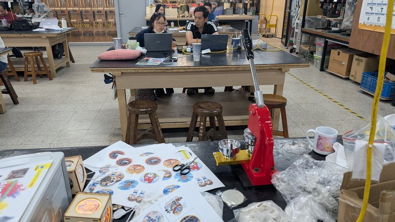
從螢幕提示詞詠唱，到現場雷切透光木質小宮燈，師生共同點亮科技與美學之光。
不僅僅是生成一張圖片，而是建構一套從「提示詞工程」到「實體文創商品」與「教學行政提速」的完整賦能流程。
AI 快速生成節慶與在地元素圖像，結合直徑尺寸規格化，免去繁瑣修圖，迅速轉化為胸章、馬克杯與小宮燈透光面板。
自動辨識演講逐字稿、快速摘錄關鍵教學重點，將枯燥課本轉化為互動故事劇本與視覺化教材。
掌握「政策規範 + 教學目標 = 專屬內容」高效詠唱公式，自動生成會議記錄、活動成果手冊與公文草案。
現場活動管理術、人流控制與損壞備案；遵守 AI 版權規範與校園資訊安全原則，打造安全可靠的教學環境。
學員與講師以萬聖節與聖誕節為主題，融入台灣地標（台北101、夜市小吃、中式牌樓）實測產出的精彩作品。
結合萬聖節南瓜提籃、吸血鬼披風與台北101背景，柔和的水彩筆觸與燈光交織，透光效果極佳。
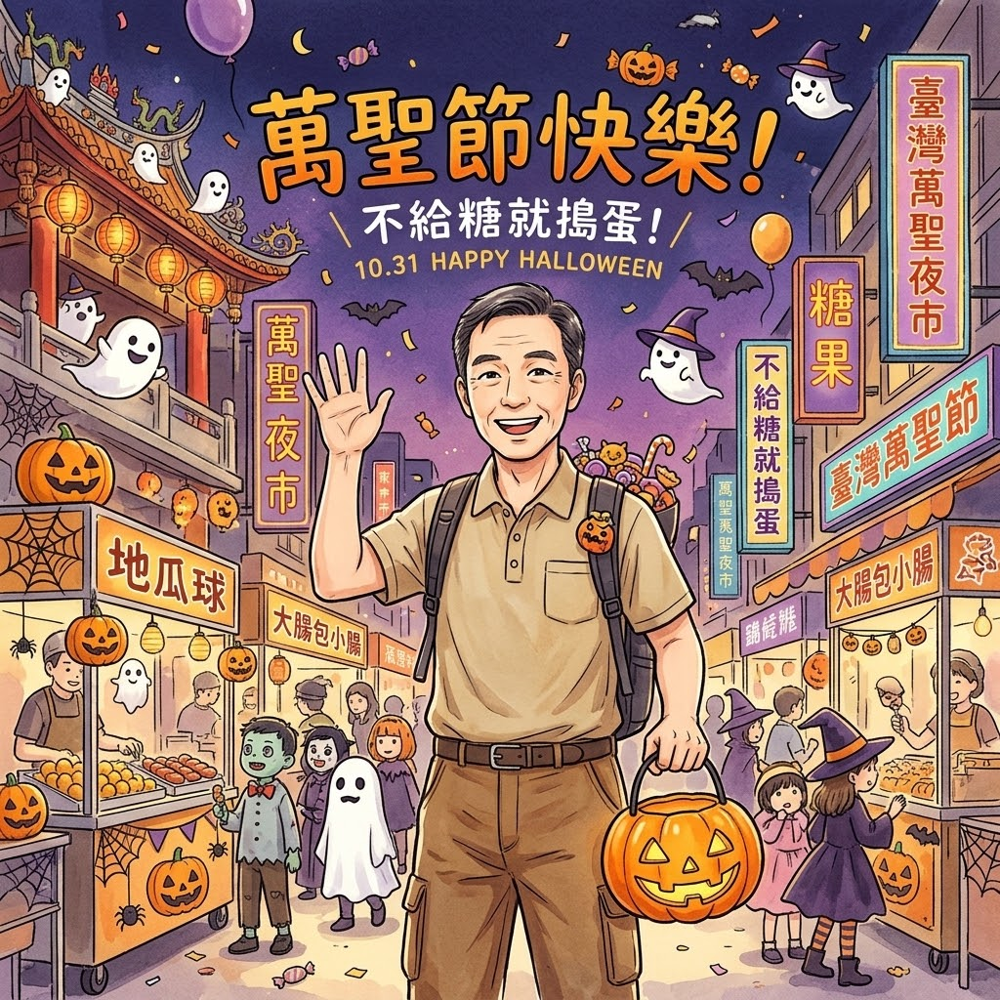
「地瓜球」、「大腸包小腸」經典攤位，與戴巫師帽討糖的孩子們熱鬧同框，在地文化感十足。
傳統中式宮燈牌樓飾以聖誕紅與雪景，溫暖金色暖光呼應宮燈本體，營造祥和喜樂的節日祝福。
結合雪人、精緻聖誕樹飾品與燈光燦爛的台北都會夜景，視覺平衡感絕佳，深獲研習老師喜愛。
生活化市集攤位、捷運出口與繁華彩燈交織，呈現寫實親切的台灣都會耶誕歡慶氣氛。
小宮燈採用木質榫接骨架與雷切窗花，內嵌高亮度暖光 LED 與半透明透光片。點擊下方按鈕，體驗親手點亮專屬小宮燈的溫暖時刻！
記錄陽明生活科技教室（iSTEM）研習實況：從 AI 詠唱、大螢幕教案解析，到雷切木構組裝與手壓胸章機實作。
壓扣機與點亮的小宮燈
文創實體成果全景
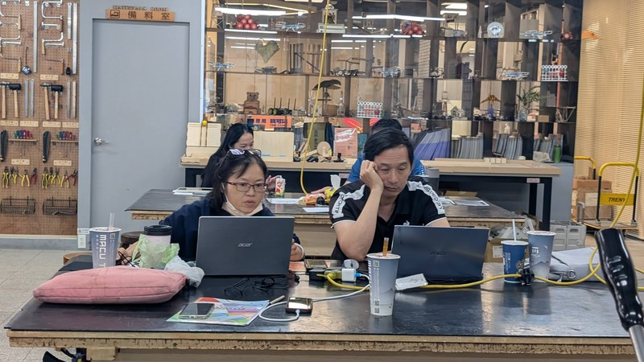
學員專注實作
筆電提示詞微調與實測
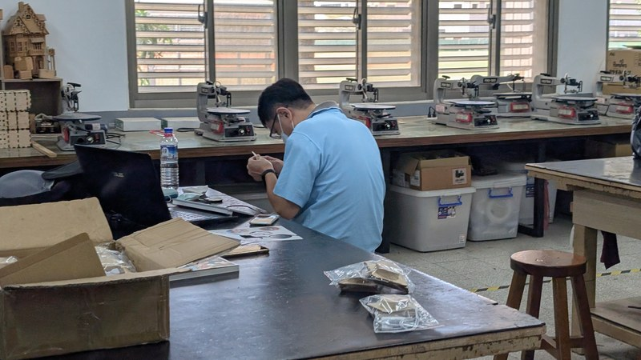
木質榫接組裝
手工組裝與線材安裝
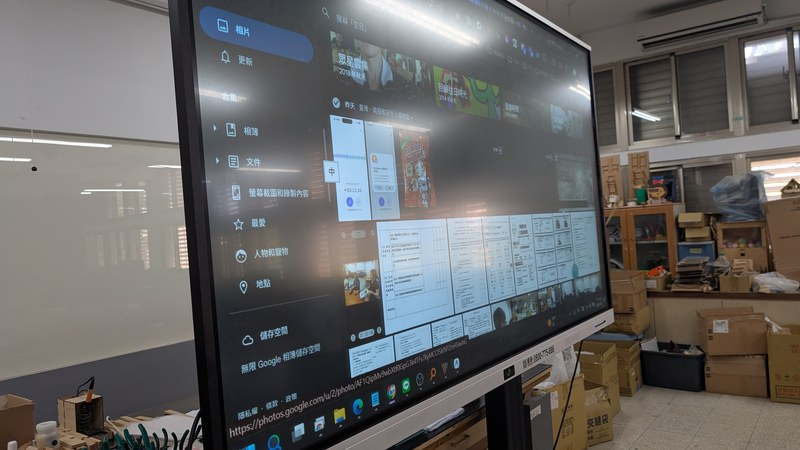
大螢幕觸控示範
教案展示與即時同步
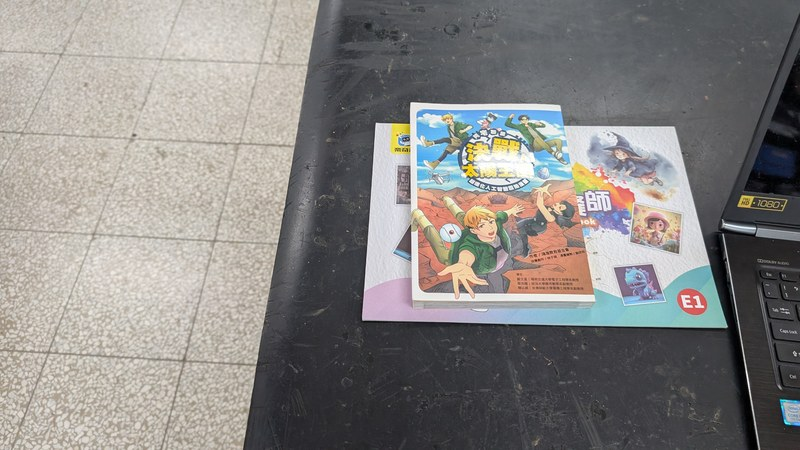
AI 教學科普圖書
《決戰太陽之國》講義教材
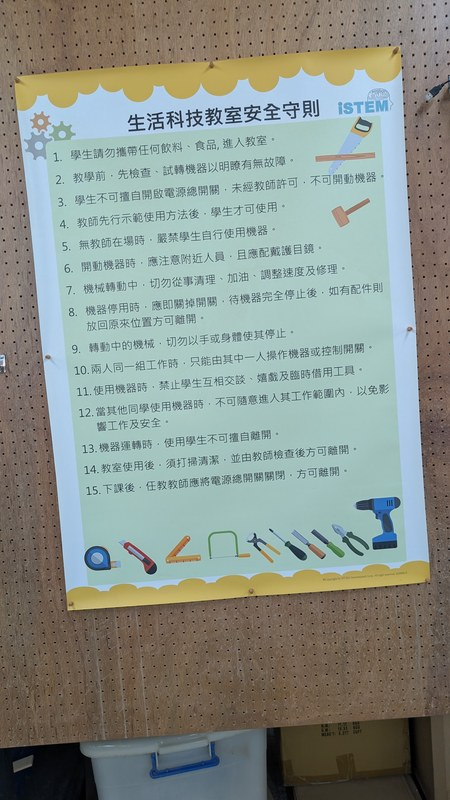
安全第一 iSTEM
生活科技教室安全守則
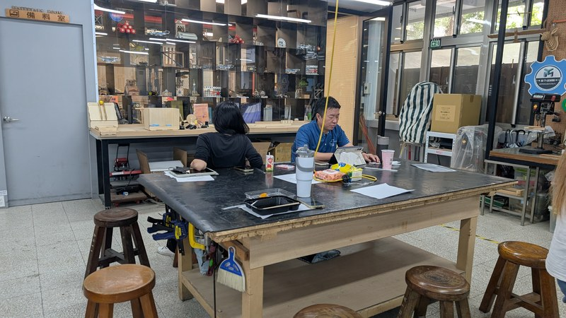
AI T-Learn 中心
完善自造教育空間
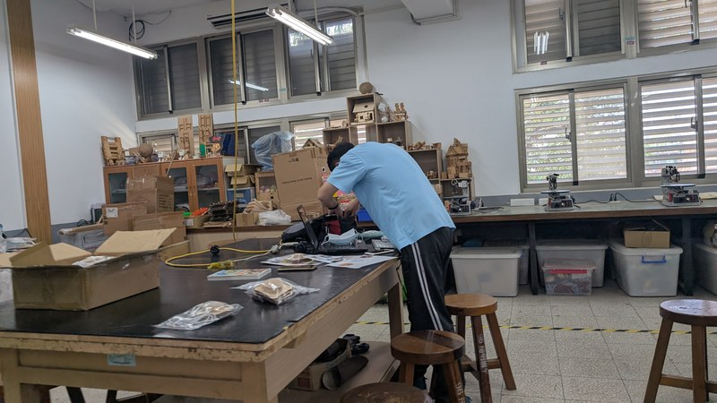
課前備料整理
小宮燈組件材料包
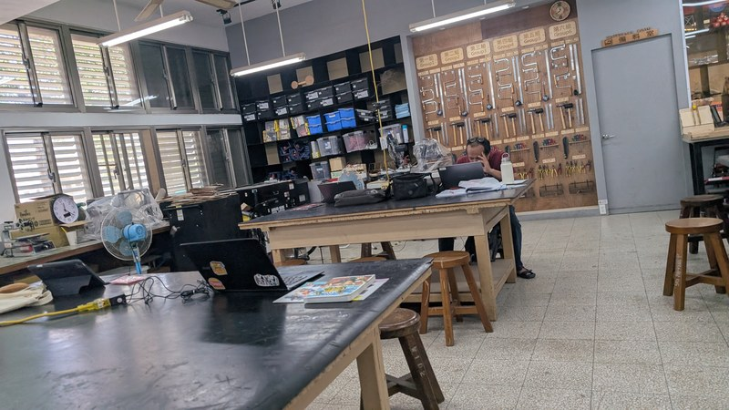
材料包特寫
雷切組件與說明手冊
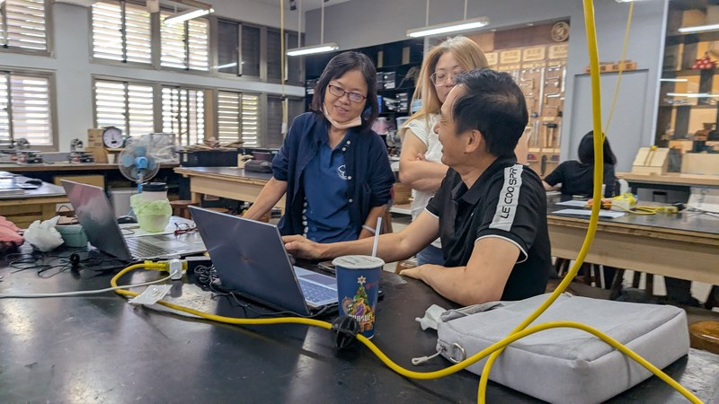
專業機台設備
線鋸機與木工加工區
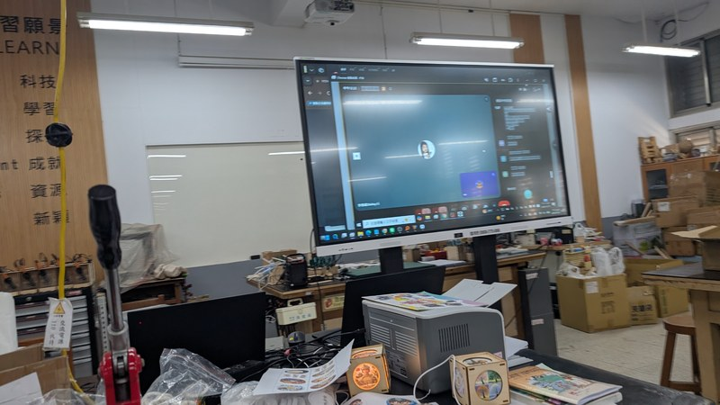
自造作品陳列
生活科技創客成果
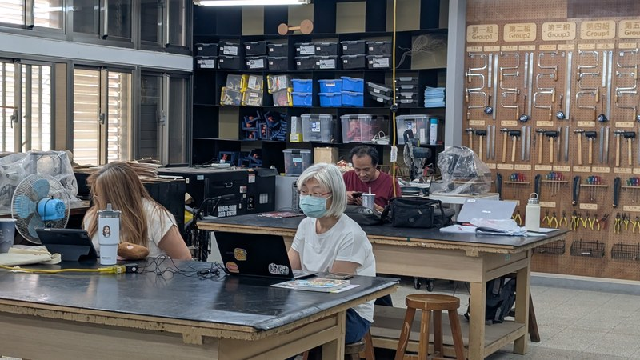
同儕交流互學
分享最佳提示詞參數
本次研習使用的兩套核心簡報檔案，可直接於線上預覽或下載離線研讀。
涵蓋四大提速模組：實體文創產出（徽章、馬克杯、小宮燈營隊）、排版地獄解脫術、活動攤位限時產出人流管理、高效詠唱公式及會議記錄自動辨識轉手冊。
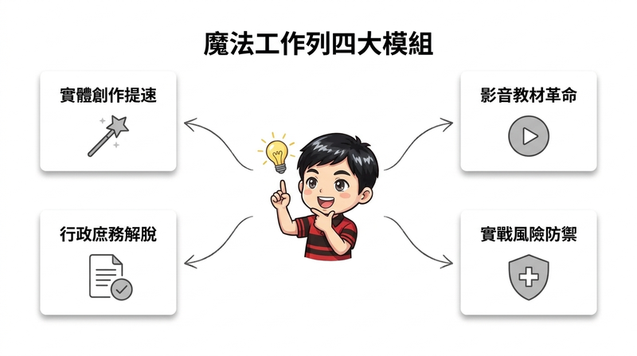
應用於徽章與馬克杯 -> 結合小宮燈營隊製作')">專為第一線教育工作者量身打造的實用工具指南：從備課教案生成、活動策劃視覺設計，到校園行政與評量優化的無痛升級方程式。
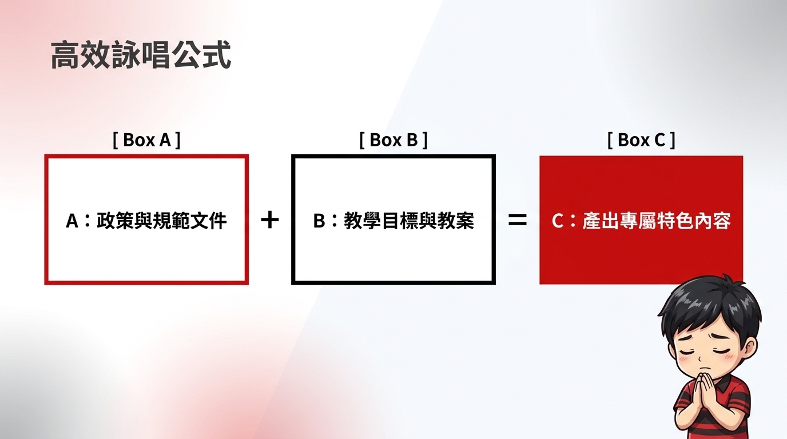
快速摘錄會議重點 -> 生成網頁版精華手冊')">今日在陽明生活科技教室（iSTEM）的「1151031AI繪圖-小宮燈實作」研習，成功打破數位科技與實體創客的藩籬。老師們從零掌握 AI 提示詞詠唱與風格控制，將充滿台灣風情的萬聖節與聖誕節想像，化為手握的木雕小宮燈與隨身胸章。
資訊科技 × 生活科技 × 視覺美學無縫接軌
榫接木構、手壓徽章、LED 光學透光組裝
返校可立即轉化為校園文創營隊與課堂活動